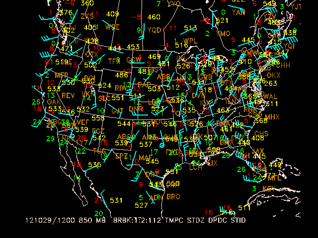
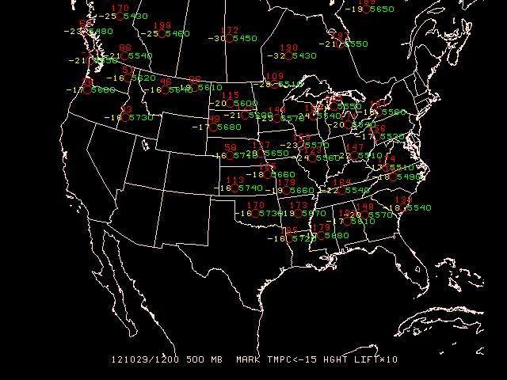

SNMAP plots sounding data parameters at station locations
on a map. Any level or station parameter that can be
computed can be displayed. Data may be plotted in any valid
GEMPAK projection and may be overlaid on images.
AREA Data area GAREA Graphics area SATFIL Satellite image filename(s) RADFIL Radar image filename(s) IMCBAR Color/ornt/anch/x;y/ln;wd/freq SNPARM Sounding parameter list DATTIM Date/time LEVELS Vertical levels VCOORD Vertical coordinate type SNFILE Sounding data file COLORS Color list MAP Map color/dash/width/filter flag MSCALE fgc;bgc;mask/units/lat;hide/values/anch/x;y/ln;wd/freq|text_info|t LATLON Line color/dash/width/freq/inc/label/format TITLE Title color/line/title CLEAR Clear screen flag PANEL Panel loc/color/dash/width/regn DEVICE Device|name|x size;y size|color type PROJ Map projection/angles/margins|drop flag FILTER Filter data factor TEXT Size/fnt/wdth/brdr/N-rot/just/hw flg LUTFIL Enhancement lookup table filename STNPLT Txtc/txt attr|marker attr|stnfil#col
A list of times may be given in DATTIM allowing animation of sounding plots.
The order of the input parameters determines their location
on the plot, similar to sfmap. A parameter
will be plotted centered at the station if it is the first
parameter in the list. If no parameter is to be displayed
centered on the station location, a semicolon must appear
before the first parameter, or the first parameter must be
either SPAC or BLNK.
The following chart shows the placement
of the data around the station. The number indicates the
position of the parameter in the SNPARM list:
8
2 10 4
3 1 5
6 11 7
9
Note that wind symbols and markers are always plotted at the center.
Let's start snmap and display the current definitions with l:
> snmap
GEMPAK-SNMAP>l
Notice that AREA, GAREA and SATFIL, among others, are preserved from the previously-run sfmap session.
AREA = us-
GAREA = dset
SATFIL = $SAT/EAST-CONUS/1km/VIS/VIS_20121029_2132
RADFIL =
IMCBAR =
SNPARM = skyc;tmpf;wsym;rmsl;ptnd;dwpf;p03i;brbk:.7:2
DATTIM = 2200
LEVELS =
VCOORD =
SNFILE =
COLORS = 26;2;7;25;20;22;18;6
MAP = 1
MSCALE = 0
LATLON =
TITLE = 1
CLEAR = y
PANEL = 0
DEVICE = xw
PROJ = sat
FILTER = 1
TEXT = 0.75/22//hw
LUTFIL =
STNPLT =
Also notice some new variables:
SNFILE - the name of the upper-air file, which can be set tp uair for the latest file in $GEMDATA/upperairSNPARM - parameters, analogous to SFPARMVCOORD is the vertical coordinate on which to list the data. GEMPAK can vertically interpolate sounding data between the various vertical coordinate systems.
PRES Pressure (millibars)
THTA Isentropes (K)
HGHT Height (meters)
NONE Surface data or data on one level only
LEVELS - level(s) to be mapped for the vertical coordinate specified by VCOORD
LEVELS = 500LEVELS = 500;550;75LEVELS = 500-75Key words:
LEVELS = MAN for mandatory level
LEVELS = VAS for mandatory VAS levels
LEVELS = ALL for ALL level
LEVELS = SFC or LEVELS = 0 for surface
LEVELS = TOP or LEVELS = -1 for top level
FILTER = YES with filter station data; i.e., overlapping stations will not be plotted. FILTER may also be entered as a number greater than or equal to zero.
FILTER = 0 has the same effect as FILTER = NO.
FILTER = 1 has the same effect as FILTER = YES.
Filter values less than 1 allow more crowding of stations, values exceeding 1 less crowding. If a parameter is BLNK, the filter will not allocate any space for that parameter. The parameter SPAC may be used to reserve the space with the FILTER option so that later calls will plot the same stations after filtering, provided that the same number of parameters is specified.
If certain stations are not to be removed by the filter, these stations are listed first following an @. The area over which filtering is to occur is specified after a slash. For example,
AREA = @iad;hts;rap/us
FILTER = YES
will display a filtered array of stations over the area corresponding to US, but IAD, HTS and RAP will be shown regardless of the filtering.
Either wind barbs or wind arrows can be plotted, by specifying a wind symbol parameter name in the list of parameters for SNPARM. The wind barb or arrow is plotted at the station location according to the type specification, which is entered as described in the SNPARM documentation.
Plot stations in the Eastern United States at 850 mb for 1200 UTC today. Plot a standard station model for each location. The upper air data to plot include:
The data are plotted using the specified color list.
AREA = us-
GAREA = us
SATFIL =
RADFIL =
IMCBAR =
SNPARM = brbk:1:2:112;tmpc;;stdz;;dpdc;stid
DATTIM = 1200
LEVELS = 850
VCOORD = pres
SNFILE = uair
COLORS = 6;2;5;3;18
MAP = 1
MSCALE = 0
LATLON =
TITLE = 1
CLEAR = yes
PANEL = 0
DEVICE = xw
PROJ = STR/90;-100;0
FILTER = no
TEXT = 0.75
LUTFIL =
STNPLT =

At a height of 500 mb and at 1200 UTC, plot the lifted index (multiplied by 10) and temperatures of less than -15 degrees Celsius.
SNPARM = mark:2;;tmpc<-15;;hght;;;;;lift*10
DATTIM = 1200
LEVELS = 500
VCOORD = pres
SNFILE = uair
COLORS = 2;5;3
FILTER = 0
TEXT = .75
